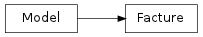

Facture¶

- class possum.base.models.Facture(*args, **kwargs)¶
Facture(id, date_creation, table_id, couverts, montant_normal, montant_alcool, restant_a_payer, saved_in_stats)
- add(vendu)¶
Ajout d’un produit à la facture. Si c’est le premier produit alors on modifie la date de creation
- ajout_paiement(modepaiement, montant, valeur_unitaire=Decimal('1.0'))¶
modepaiement est un TypePaiement montant est un Decimal
Si le montant est superieur au restant du alors on rembourse en espece.
- check_path(path)¶
Verifie l’existance du chemin et cree le repertoire si besoin ‘
- del_all_paiements()¶
On supprime tous les paiements
- del_all_produits()¶
On supprime tous les produits
- del_paiement(paiement)¶
On supprime un paiement
- del_produit(vendu)¶
On enleve un produit à la facture.
Si le montant est négatif après le retrait d’un élèment, c’est qu’il reste certainement une remise, dans ce cas on enlève tous les produits.
- est_soldee()¶
La facture a été utilisée et soldée
- est_surtaxe()¶
Table is surtaxed et il n’y a pas de nourriture.
- est_un_repas()¶
Est ce que la facture contient un element compris dans les categories entrees, plats, desserts ou formules
- est_vierge()¶
La facture est vierge
- getTvaNormal()¶
calcul la TVA On arrondi seulement à 1 parce que les 2 décimals sont dans la partie entière du montant # la TVA est sur le HT !!
- get_factures_du_jour(date)¶
Retourne la liste des factures soldees du jour ‘date’
- get_users()¶
Donne la liste des noms d’utilisateurs
- get_working_date()¶
Retourne la journee de travail officiel (qui fini a 5h du matin)
- guest_couverts()¶
Essaye de deviner le nombre de couverts
- maj_stats()¶
Calcule les statistiques pour cette facture si elle est soldée
- maj_stats_avec_nouvelles_factures()¶
Calcule les stats pour toutes les nouvelles factures soldées.
- nb_soldee_jour(date)¶
Nombre de facture soldee le jour ‘date’
- non_soldees()¶
Retourne la liste des factures non soldees
- rapport_jour(date)¶
Retourne le rapport du jour sous la forme d’une liste ‘jour’ est de type datetime.today()
exemple: – 15/12/2010 – Cheque 285,05 Ticket Resto 723,67 Espece 3876,46 ANCV 150,00 CB 3355,60 total TTC: 8386,08 montant TVA 5,5: 353,26 montant TVA 19,6: 263,82
Menu E/P : 16 Menu P/D : 16 Menu Tradition : 16
Salade cesar : 6 ...
plat ...
- rapport_jour_old(date)¶
Retourne le rapport du jour sous la forme d’une liste ‘jour’ est de type datetime.today()
exemple: – 15/12/2010 – Cheque 285,05 Ticket Resto 723,67 Espece 3876,46 ANCV 150,00 CB 3355,60 total TTC: 8386,08 montant TVA 5,5: 353,26 montant TVA 19,6: 263,82
Menu E/P : 16 Menu P/D : 16 Menu Tradition : 16
Salade cesar : 6 ...
plat ...
- rapport_mois(mois)¶
Retourne dans une liste le rapport du mois ‘mois’ ‘mois’ est de type datetime.today()
exemple:
– CA mensuel 12/2010 – Cheque 285,05 Ticket Resto 723,67 Espece 3876,46 ANCV 150,00 CB 3355,60 total TTC: 8386,08 montant TVA 5,5: 353,26 montant TVA 19,6: 263,82
- rapport_mois_old(mois)¶
Retourne dans une liste le rapport du mois ‘mois’ ‘mois’ est de type datetime.today()
exemple:
– CA mensuel 12/2010 – Cheque 285,05 Ticket Resto 723,67 Espece 3876,46 ANCV 150,00 CB 3355,60 total TTC: 8386,08 montant TVA 5,5: 353,26 montant TVA 19,6: 263,82
- set_couverts(nb)¶
Change le nombre de couvert
- set_table(table)¶
Change la table de la facture On prend en compte le changement de tarification si changement de zone.
- ticket()¶
Retourne le ticket sous la forme d’une liste de ligne.